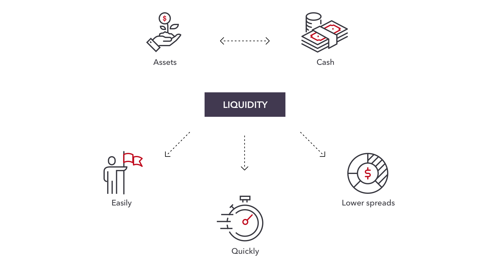

Stock(Equity) is a good investment.Investors earn returns in equity investing by way of dividends and capital appreciation. Along with monetary benefits, the holders of such shares also get voting rights in critical matters of the company. Basically, they are treated as owners of the company wherein the ownership is limited to the extent of the shares held by them. A business issues shares primarily when it is in need of funds for growth and expansion. It approaches the investors by means of an Initial Public Offering (IPO). IPO is treated as a primary market wherein the equity shares of the company are offered to the general public for subscription for the first time. Afterwards, the shares get listed on a particular stock exchange and exchange hands through frequent trading.
Individuals have financial goals which motivate them to invest in specific havens. It is because of the forces of inflation and taxes. If you have been restricting you investments to only bank fixed deposits (FDs), then you might face difficulties in protecting your wealth.Assuming an individual falls in the highest tax bracket i.e. 30%, his returns on the FD after tax would be around 5.6%. It means that his wealth is losing 2.4% every year. Hence, inflation and taxes are always going to stay but your choices of investing can bring about a lot of difference in your rate of return. With equities, you can think of protecting your wealth from getting lost to rising inflation and simultaneously earn a higher real rate of return. Investors make huge profits when the shares are way above the price at which you bought them initially. On top of it, you receive dividends, bonus or rights shares, which further maximizes your returns.
A good way of allocation is to subtract your age from 100 – this should be the percentage of stocks in your portfolio. For example, a 30-year-old could keep 70% in stocks with 30% in bonds. On the other hand, a 60-year-old should reduce risk exposure, hence, the stock to bond allocation should be 40:60. However, you may have to factor in your family finances when taking these decisions.
Stock(Equity) stocks are typically more appealing to growth investors than to income investors. Stock(Equity) stocks generally rise and fall, but When a company pays cash dividends on its outstanding shares, it first declares the dividend to be paid as a dollar amount per owned share. For example, a company with 2 million shares outstanding that declares a 50-cent cash dividend pays out a total of $1 million to all shareholders. Cash dividends are considered assets because they increase the net worth of shareholders by the amount of the dividend.
While there are many potential benefits to investing in equities, like all investments, there are risks as well. Market risks impact equity investments directly. Stocks will often rise or fall in value based on market forces. As a result, investors can lose some or all of their investment due to market risk.
Other types of risk that can affect equity investments include:
Credit risk: a company could be unable to pay its debt.
Foreign currency risk: a company’s value could change because of shifts in the value of different international currencies.
Liquidity risk: a company could be unable to meet its short-term debt obligations.
Political risk: a company’s returns could suffer because of a country’s political changes or instability.
Economic concentration risk: a company’s value could drop because it’s too concentrated in a single entity, sector or country (putting all its eggs in one basket). If the value of that factor drops, the company will get hurt disproportionately.
Inflation risk: a company’s value could drop because it’s hurt by rising inflation, thus diluting its worth.
A stock's liquidity generally refers to how rapidly shares of a stock can be bought or sold without substantially impacting the stock price. Stocks with low liquidity may be difficult to sell and may cause you to take a bigger loss if you cannot sell the shares when you want to.
Long-term capital gains (or LTCG) from equity is taxable at 10% (plus surcharge and cess as applicable) after a holding period of one year. This includes equity stocks as such and equity-oriented mutual funds. However, this LTCG tax of 10% is applicable for gains beyond Rs 1 lakh per financial year.
Investing in equity shares provides high returns to investors. Shareholders have an opportunity to enjoy wealth creation, not just through dividend earnings but also through capital appreciation. When an individual invests in equity shares, he/she has the potential to earn high returns.

These are funds that invest in Stock(Equity). Equity funds are those mutual funds that primarily invest in stocks. You invest your money in the fund via SIP or lumpsum which then invests it in various equity stocks on your behalf. The consequent gains or losses accrued in the portfolio affect your fund's Net Asset Value (NAV).
Demat is simply an account that allows you to hold your shares in an electronic format. A demat account converts the physical shares into an electronic form, therefore dematerializing it. On opening a demat account, you will be given a demat account number to be able to electronically settle your trades.
Index funds are simply a kind of proxy to the stock market performance. If the market i.e. Sensex rises by 15 per cent annualized over 5 years, the index fund tracking the same index is expected to be generating almost similar returns.